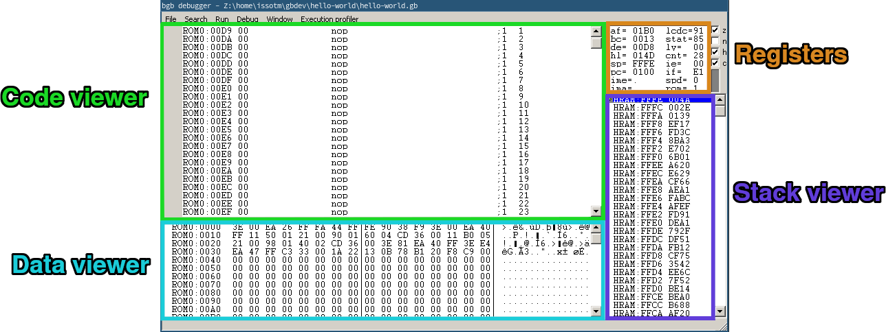
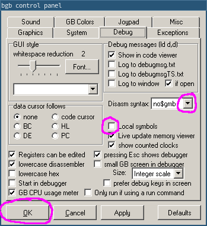
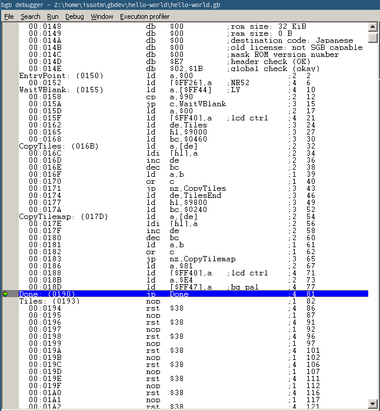
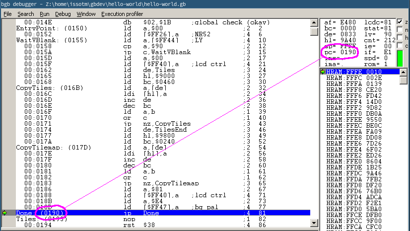
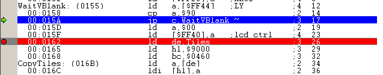
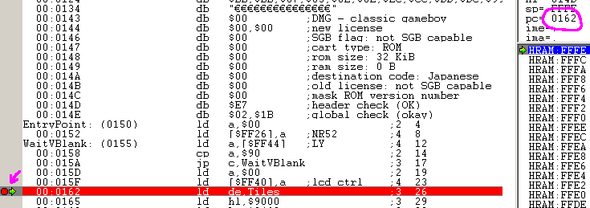
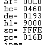

トレース
魔法使いになることを夢見たことがありますか？ まあ、これで魔法の力が得られるわけではありませんが、エミュレータを使って時間をコントロールする方法を見てみましょう。
まず、デバッガのウィンドウにフォーカスを合わせてください。左上がコードビューア、左下がデータビューア、右上がレジスタ（レジスタのレッスンで見ました）、右下がスタックビューアです。 スタックって何？ その答えは後ほど・・・パートⅡで説明します😅。
セットアップ
エミュレータの実行中にデバッガにフォーカスすると、スクリーンウィンドウのタイトルがbgb（debugging）に変わり、デバッガが一時停止します。
さて、この奇妙な構文は何でしょう？ ゲームボーイのアセンブリにはいくつかの構文があり、BGBはデフォルトではRGBDS'を使いません。 これはオプションで修正できます。オプションには、次のいずれかでアクセスできます。
- 画面を右クリックし、"オプション "を選択する
- デバッガで、"ウィンドウ "メニューを開き、"オプション "を選択します。
- 画面またはデバッガにフォーカスを合わせた状態でF11キーを押す
BGBにはたくさんのオプションがありますが、デフォルトで設定されているので、今はほとんど見る必要はありません。 Debug」タブを選択し、「Disasm syntax」を「rgbds」に設定します。 それと「Local symbols」にもチェックを入れます。 あとは「OK」をクリックしてオプションを適用してください。

You can also customize a lot of key bindings in the options, but I will stick to the default ones for this tutorial for the sake of simplicity.
Alright, great! But where are the labels? Well, as we have seen a couple of lessons ago, labels are merely a convenience provided by RGBASM, but they are not part of the ROM itself. It is very much inconvenient to debug without them, and so sym files (for “symbols”) have been developed. Let’s run RGBLINK to generate a sym file for our ROM:
rgblink -n hello-world.sym hello-world.o
‼️
The file names matter!
When looking for a ROM’s sym file, BGB takes the ROM’s file name, strips the extension (here, .gb), replaces it with .sym, and looks for a file in the same directory with that name.
Then, in the debugger, we can go in the “File” menu and select “reload SYM file”.

Much better!
🔍
If a sym file is loaded, pressing Tab allows toggling whether labels are displayed or not.
Stepping
When pausing execution, the debugger will automatically focus on the instruction the CPU is about to execute, as indicated by the line highlighted in blue. 
ℹ️
The instruction highlighted in blue is always what the CPU is about to execute, not what it just executed. Keep this in mind.
If we want to watch execution from the beginning, we need to reset the emulator. Go into the debugger’s “Run” menu, and select “Reset”, or tap your numpad’s * key.
The blue line should automatically move to address $01001, and now we’re ready to trace! All the commands for that are in the “Run” menu.
- “Run” simply unpauses the emulator. Clicking on the screen also does the same.
- “Trace” (more commonly known as “Step Into”) and “Step Over” advance the emulator by one instruction.
They only really differ on the
callinstruction and interrupts, neither of which we are using here, so we will use “Trace”. - The other options are not relevant for now.
We will have to “Trace” a bunch of times, so it’s a good idea to use the key shortcut.
If we press F7 once, the jp EntryPoint is executed.
And if we press it a few more times, can see the instructions being executed, one by one!
Now, you may notice the WaitVBlank loop runs a lot of times, but what we are interested in is the CopyTiles loop.
We can easily skip over it in several ways; this time, we will use a breakpoint.
We will place the breakpoint on the ld de, Tiles at 00:0162; either double-click on that line, or select it and press F2.
The line will turn red:

Then you can resume execution either by clicking the screen or pressing F9, and BGB will automatically pause. Whenever BGB is running, and the (emulated) CPU is about to execute an instruction a breakpoint was placed on, it automatically pauses.

You can see where execution is being paused both from the green arrow and the value of PC.
If we trace the next three instructions, we can see the three arguments to the CopyTiles loop getting loaded into registers.

For fun, let’s watch the tiles as they’re being copied. For that, obviously, we will use the data viewer, and position it at the destination. As we can see from the image above, that would be $9000!
Select the data viewer (either click somewhere in it, or use Ctrl+Tab to switch focus, as indicated by the grey bar on the left), and press Ctrl+G (for “Goto”).
In the popup, type the address you wish to go to, in our case 9000 (sans dollar sign!!).
Awesome, right?
What next?
Congrats, you have just learned how to use a debugger! We have only scratched the surface, though; we will use more of BGB’s tools to illustrate the next parts. Don’t worry, from here on, lessons will go with a lot more images—you’ve made it through the hardest part!
Why does execution start at $0100? That’s because it’s where the boot ROM hands off control to our game once it’s done.